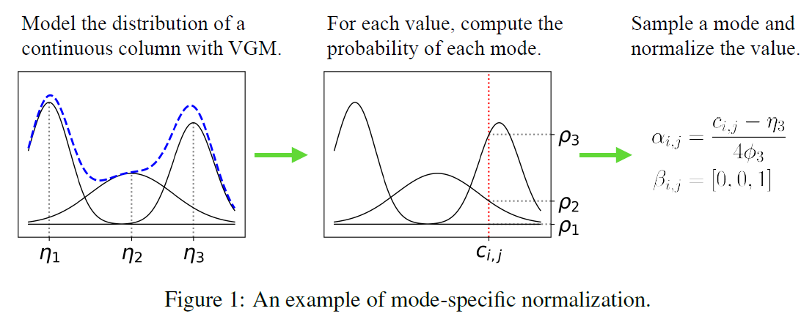
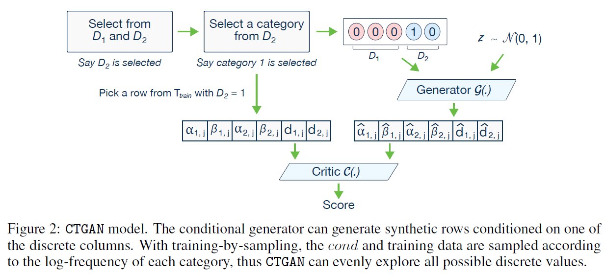
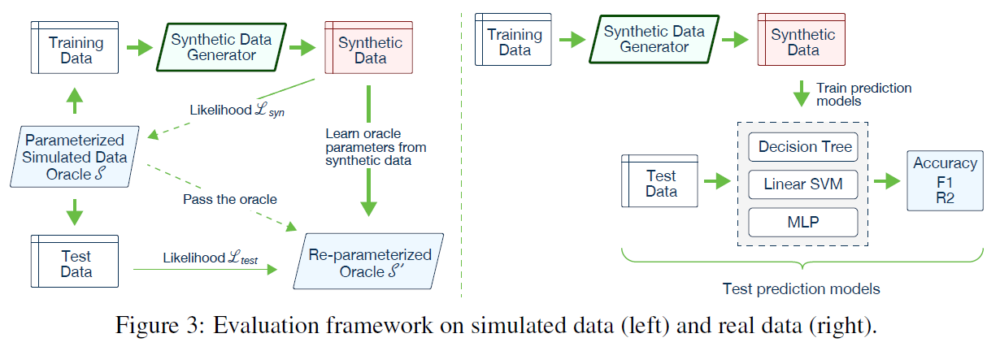
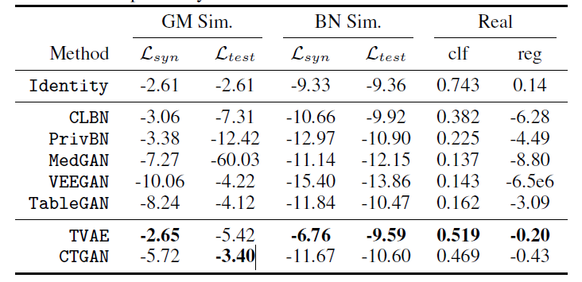

[논문] Modeling Tabular Data using Conditional GAN
ref
Introduction
- tabular data GAN
- likelihood fitness, machine learning efficiency
- CTGAN
Conditional GANs for synthetic data generation
A benchmarking system for synthetic data geration algorithms
Challenges with GANs in Tabular Data Generation Task
\(N_c\): continuous columns \(({C_1, \dots, C_{N_c}})\)
\(N_d\):discrete columns \(({D_1, \dots, D_{N_d}})\)
위 두개는 각각 \(random \ variable\)이고 아래와 같이 두 변수의 결합분포를 가진다.
\(r_j=(c_{1,j},\dots,c_{N_{c,j}},d_{1,j},\dots,d_{N_{d,j}}), \ j \in {1,\dots,n}\)
table \(T\) 는 \(N_c, N_d\)를 포함한다.
data synthesizer \(G\)를 사용하여 synthetic table \(T_{syn}\)을 만든다.
\(T\) is partitioned into training set \(T_{train}\) and test set \(T_{test}\).
- \(T_{syn}\) 효율성 평가 방법
- Likelihood fitness : Do columns in Tsyn follow the same joint distribution as Ttrain?
\(T_{syn}\)의 columns이 \(T_{train}\)의 결합분포를 따르는가?
- Machine learning efficacy : When training a classifier or a regressor to predict one column using other columns as features, can such classifier or regressor learned from Tsyn achieve a similar performance on Ttest, as a model learned on Ttrain?
- Mixed data types
tabula data는 혼합된 경우가 많다.
이산형 연속형..
GAN은 softmax와 tanh를 사용해야 한다.
- Non-Gaussian distributions
가우시안 분포를 따르는 것은 min-max transformation을 사용해 [-1,1]로 표준화 한다.
연속형 변수는 비가우시안 분포를 사용?
- Multimodal distributions
- Learning from sparse one-hot-encoded vectors
synthetic sample은 softmax를 사용하여 생성한다.
real data는 one-hot vector를 이용한다.
- Highly imbalanced categorical columns
CTGAN Model
- mode-specific normalization을 사용하여 non-Gaussian과 multimodal distribution를 해결한다.
- contidional generator, training-by-sampling 를 통해 불균형이산형(imbalanced discrete columns) 열들을 해결한다.
Notations
– \(x_1 \oplus x_2 \oplus \dots\): concatenate vectors \(x_1, x_2, \dots\)
– \(gumbel_{\gamma} (x)\): apply Gumbel softmax with parameter \(\gamma\) on a vector \(x\)
– \(leaky_{\gamma}(x)\): apply a leaky ReLU activation on \(x\) with leaky ratio \(\gamma\)
– \(FC_{u \to v}(x)\): apply a linear transformation on a \(u\)-dim input to get a \(v\)-dim output.
이 외에도 tanh, ReLU, softmax, BN, drop 등을 사용한다.
Mode-specific Normalization

- 연속형 변수 \(C_i\)는 variational Gaussian mixture model(VGM) 을 사용한다.
위 예시에서 VGM은 \(\eta_1,\eta_2,\eta_3\)인 \(m_i=3\)인 mode를 찾는다.
Gaussian mixture = \(\mathbb{P}_{C_i}(c_{i,j}) = \sum_{k=1}^3 \mu_k N (c_{i,j}: \eta_k, \phi_k)\)
\(\mu_k, \phi_k\) 의 가중치와 분산은 각각 구해놓는다.
- \(c_{i,j}\)의 확률밀도함수는 각각 \(\rho_1, \rho_2, \rho_3\)이다.
s.t \(\rho_k = \mu_k N(c_{i,j}: \eta_k, \phi_k)\)
- 3번째 mode를 선택한다. 원핫인코딩을 통해서 \(c_{i,j} \to \beta_{i,j}=[0,0,1]\)로 바꾼다.
그리고 \(\alpha_{i,j}= \dfrac{c_{i,j}0 - \eta_3}{4\phi_3}\) 가중치를 곱한다.
연속형과 이산형 열들을 바꿔준다.
\(r_j = \alpha_{1,j}\oplus \beta_{1,j}\oplus \dots \oplus \alpha_{N_{c,j}} \oplus \beta_{N_{c,j}} \oplus d_{1,j} \oplus \dots \oplus d_{N_{d,j}}\)
Conditional Generator and Training-by-Sampling
class imbalance
만약 훈련 데이터가 랜덤샘플에서 훈련된다면 열은 적은카테고리를 가지고 있는 분류를 충분히 대표할수 없다.
이 문제를 the conditional vector, the generator loss, the training-by-sampling method를 이용해 해결하자.

Conditional vector
이산형 분포인 \(D_{N_d}\)를 원핫인코딩을 통해 \(d_{N_d}\)로 바꾼다.
For instance, for two discrete columns,D1 = f1, 2, 3g and D2 = f1, 2g,the condition (D2 = 1) is expressed by the mask vectors m1 = [0, 0, 0] and m2 = [1, 0]; so cond = [0, 0, 0, 1, 0].
Generator loss
Training-by-sampling
- Figure2
\(m_i^{(k)} = I(if i=i^* \ and \ k=k^*)\)
\(D_2\) 열을 선택한다. 즉 \(i^*=2\)이다.
\(D_2\)에서 첫번째를 선택한다. 즉 \(k^*=1\)이다.
\(m_1=[0,0,0], m_2=[1,0], cond=[0,0,0,1,0]\)
Network Structure
generator \(\mathbb{g}(z,cond)\)
\(h_0 = z \oplus cond\)
\(h_1 = h_0 \oplus ReLU(BN(FC_{|cond|+|z| \to 256}(h_0)))\)
\(h_2 = h_1 \oplus ReLU(BN(FC_{|cond|+|z|+256 \to 256}(h_1)))\)
\(\widehat \alpha_i = tanh(FC_{|cond|+|z|+512 \to 1}(h_2)), \ 1 \leq i \leq N_c\)
\(\widehat \beta_i = gumbel_{0.2}(FC_{|cond|+|z|+512 \to m_i} (h_2)), \ 1 \leq i \leq N_c\)
\(\widehat d_i = gumbel_{0.2}(FC_{|cond|+|z|+512 \to |D_i|}(h_2)), \ 1 \leq i \leq N_c\)
critic \(C(r_1,\dots,r_{10},cond_1,\dots,cond_{10})\)
- use PacGAN with 10 samples in each pac to prevent mode collapse
\(h_0 = r_1 \oplus \dots \oplus r_{10} \oplus cond_1 \oplus \dots \oplus cond_{10}\)
\(h_1 = drop(leaky_{0.2}(FC_{10|r|+10|cond| \to 256}(h_0)))\)
\(h_2 = drop(leaky_{0.2}(FC_{256 \to 256}(h_1)))\)
\(C(\cdot) = FC_{256 \to 1}(h_2)\)
Adam optimaizer 사용한 학습률 \(2·10^{-4}\)
TVAE Model
- TVAE generator
\(h_1 = ReLU(FC_{128 \to 128}(z_j))\)
\(h_2 = ReLU(FC_{128 \to 128}(h_1))\)
\(\bar \alpha _{i,j} = tanh(FC_{128 \to 1}(h_2)) \ , \ 1 \leq i \leq N_c\)
\(\widehat \alpha_{i,j} \sim N(\bar \alpha_{i,j} , \delta_i) \ , \ 1 \leq i \leq N_c\)
\(\widehat \beta_{i,j} \sim softmax(FC_{128 \to m_i} (h_2)) \ , \ 1 \leq i \leq N_c\)
\(\widehat d_{i,j} \sim softmax(FC_{128 \to |D_i|}(h_2)) \ , \ 1 \leq i \leq N_d\)
\(p_\theta(r_j|z_j) = \Pi_{i=1}^{N_c} \mathbb{P}(\widehat \alpha_{i,j} = \alpha_{i,j}) \Pi_{i=1}^{N_c} \mathbb{P}(\widehat \beta_{i,j} = \beta_{i,j}) \Pi_{i=1}^{N_d} \mathbb{P}(\widehat \alpha_{i,j} = \alpha_{i,j})\)
\(\widehat \alpha_{i,j}, \widehat \beta_{i,j}, \widehat d_{i,j}\) : random variable
\(p_\theta(r_j|z_j)\) : joint distribuion
TVAE를 Adam으로 학습한 학습률: \(1e^{-3}\)
Benchmarking Synthetic Data Generation Algorithms
Baselines and Datasets
simulated data
오라클 S로부터 \(T_{train}, T_{test}\)을 만든다.
이 오라클은 가우시안 혼합 모델 또는 베이지안 네트워크이다.
GridR:각 모드에 랜덤 오프셋을 추가
베이지안 네트워크: alarm, child, asia, insurance를 사용
real datasets
UCI머신러닝에서 사용되는 6개 사용
adult, census, covertype, intrusion,news
MNIST 사용
Evaluation Metrics and Framework

Likelihood fitness metric
simulated data 사용
$T_{syn} L_{syn},T_{test} L_{test}, $
\(L_{syn}\)이 과적합되는 문제를 해결하기 위하 \(L_{test}\)를 사용
Machine learning efficacy
real dataset 사용
accruracy와 F1, \(\mathbb{R^2}\) 측정
Benchmarking Results

GM Sim : Gaussian mixture
BN Sim : Bayesian networks
TVAE가 CTGAN보다 우수한 편이지만 privacy해결은 못하므로 privacy생각하면 CTGAN사용..
Dataset Details
– Adult: http://archive.ics.uci.edu/ml/datasets/adult
– Census: https://archive.ics.uci.edu/ml/datasets/census+income
– Covertype: https://archive.ics.uci.edu/ml/datasets/covertype
– Credit: https://www.kaggle.com/mlg-ulb/creditcardfraud
– Intrusion: http://archive.ics.uci.edu/ml/datasets/kdd+cup+1999+data
– MNIST: http://yann.lecun.com/exdb/mnist/index.html
– News: https://archive.ics.uci.edu/ml/datasets/online+news+popularity
사용예시
from ctgan import CTGAN
from ctgan import load_demo
real_data = load_demo()
# Names of the columns that are discrete
discrete_columns = [
'workclass',
'education',
'marital-status',
'occupation',
'relationship',
'race',
'sex',
'native-country',
'income'
]
ctgan = CTGAN(epochs=10)
ctgan.fit(real_data, discrete_columns)
# Create synthetic data
synthetic_data = ctgan.sample(1000)| age | workclass | fnlwgt | education | education-num | marital-status | occupation | relationship | race | sex | capital-gain | capital-loss | hours-per-week | native-country | income | |
|---|---|---|---|---|---|---|---|---|---|---|---|---|---|---|---|
| 0 | 21 | Private | 168287 | HS-grad | 14 | Married-civ-spouse | Transport-moving | Unmarried | Black | Male | 27 | 2 | 47 | United-States | <=50K |
| 1 | 40 | Local-gov | 129105 | HS-grad | 14 | Married-civ-spouse | Machine-op-inspct | Husband | Other | Female | 127 | 1503 | 40 | United-States | <=50K |
| 2 | 19 | State-gov | 182904 | Some-college | 10 | Divorced | Adm-clerical | Wife | White | Male | -17 | -4 | 40 | United-States | <=50K |
| 3 | 34 | Self-emp-inc | 203270 | 1st-4th | 1 | Never-married | Prof-specialty | Not-in-family | White | Male | 121 | 1918 | 29 | United-States | <=50K |
| 4 | 23 | Private | 181278 | 10th | 3 | Never-married | ? | Husband | White | Male | 8805 | 6 | 38 | China | <=50K |
| ... | ... | ... | ... | ... | ... | ... | ... | ... | ... | ... | ... | ... | ... | ... | ... |
| 995 | 28 | State-gov | 29365 | Some-college | 5 | Married-civ-spouse | Adm-clerical | Husband | Asian-Pac-Islander | Male | 16 | -6 | 40 | United-States | >50K |
| 996 | 27 | Private | 130995 | HS-grad | 1 | Married-civ-spouse | Exec-managerial | Husband | White | Female | 35 | 2 | 49 | Canada | <=50K |
| 997 | 35 | Private | 128850 | Some-college | 3 | Married-spouse-absent | Adm-clerical | Unmarried | White | Female | 119 | -7 | 40 | United-States | <=50K |
| 998 | 28 | Private | 188708 | HS-grad | 10 | Married-spouse-absent | Prof-specialty | Not-in-family | Black | Male | 58 | -1 | 40 | United-States | <=50K |
| 999 | 30 | Private | 146128 | Some-college | 2 | Married-civ-spouse | Sales | Husband | White | Female | 85 | 0 | 26 | United-States | <=50K |
1000 rows × 15 columns